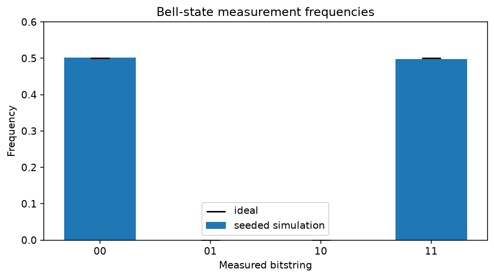

Prepare and measure a Bell state¶
-
Track
Foundations
-
Downloads
This tutorial builds the smallest entangled quantum system and follows it from an exact statevector to finite-shot measurement data. Along the way, it shows the distinction between a quantum state and the classical evidence collected from repeated measurements.
For two qubits, the Bell state used here is
The ket cannot be factored into independent single-qubit states. Measuring either qubit alone produces zero or one with equal probability, but the two outcomes are perfectly correlated. In ideal sampling we therefore expect \(P(00)=P(11)=1/2\) and \(P(01)=P(10)=0\).
We first inspect the exact amplitudes, then add measurements and collect reproducible shot counts, and finally compare their observed frequencies with the theoretical distribution in a figure.
Imports and display settings¶
A fatqat.Program is the backend-independent circuit description. Gate
values live in fatqat.operations; fixed gates such as H and CX
are passed directly rather than constructed. NumPy helps us check the state,
and Matplotlib supplies the captured runtime figure.
import matplotlib.pyplot as plt
import numpy as np
import fatqat as fq
import fatqat.operations as ops
np.set_printoptions(precision=3, suppress=True)
Build the entangling circuit¶
The system begins in \(|00\rangle\). Applying a Hadamard gate to qubit zero creates
in FATQAT's public most-significant-first subsystem convention. The controlled-X then flips qubit one exactly when qubit zero is one, producing \(|\Phi^+\rangle\). This first program has no classical register and no measurements because we want the exact final state.
bell_program = fq.Program(2)
bell_program.add(ops.H, 0)
bell_program.add(ops.CX, (0, 1))
Inspect the exact statevector¶
method="SV" selects statevector simulation. With no measurement, the
run is deterministic: one backend execution gives the exact final vector.
We disable counts and explicitly request the native final-state artifact.
backend = fq.simulator.Simulator(method="SV")
state_result = backend.run(
bell_program,
result_config={"counts": False, "final_state": True},
).result()
statevector = state_result.get_statevector()
print("Statevector:")
print(statevector)
print(f"Total probability: {np.vdot(statevector, statevector).real:.12f}")
Runtime result
Statevector:
[0.707+0.j 0. +0.j 0. +0.j 0.707+0.j]
Total probability: 1.000000000000
The basis order is \(|00\rangle\), \(|01\rangle\), \(|10\rangle\), \(|11\rangle\). The printed vector therefore has amplitudes \(1/\sqrt{2}\) at indices zero and three and zero elsewhere. The next cell makes those probabilities explicit so the runtime output can be checked directly against the printed statevector.
probabilities = np.abs(statevector) ** 2
print("Exact basis probabilities:", probabilities)
Runtime result
Exact basis probabilities: [0.5 0. 0. 0.5]
Add classical measurement¶
A sampled program needs two classical bits. We rebuild the short program so
its quantum instructions are unchanged, then measure quantum slots zero and
one into classical slots zero and one. Count strings are displayed with
classical slot zero on the left, so the correlated results appear as
"00" and "11".
measured_program = fq.Program(2, 2)
measured_program.add(ops.H, 0)
measured_program.add(ops.CX, (0, 1))
measured_program.measure((0, 1), (0, 1))
Sample a reproducible experiment¶
Finite-shot results fluctuate around the exact probabilities. A fixed seed makes the tutorial's printed output stable across repeated tutorial runs; applications that want independent experimental samples can omit it. The seed controls sampling, not the state prepared by the gates.
shots = 1_000
sample_result = backend.run(
measured_program,
shots=shots,
simulation_config={"seed": 7},
).result()
counts = sample_result.get_counts()
print("Seeded counts:", counts)
print("Available result data:", sorted(sample_result.available_data))
Runtime result
Seeded counts: {'00': 502, '11': 498}
Available result data: ['counts']
Compare observation with theory¶
For outcome \(x\), the empirical frequency
estimates the Born probability. The dashed line marks the ideal probability
\(1/2\) for both allowed outcomes. Sampling noise moves each bar slightly
away from that value, while the impossible 01 and 10 outcomes remain
absent in this noiseless circuit.
outcomes = ("00", "01", "10", "11")
observed = np.array([counts.get(outcome, 0) / shots for outcome in outcomes])
ideal = np.array([0.5, 0.0, 0.0, 0.5])
observed_by_outcome = {
outcome: float(frequency) for outcome, frequency in zip(outcomes, observed)
}
print("Observed frequencies:", observed_by_outcome)
figure, axis = plt.subplots(figsize=(7, 4))
positions = np.arange(len(outcomes))
axis.bar(positions, observed, width=0.65, label="seeded simulation")
axis.scatter(positions, ideal, color="black", marker="_", s=350, label="ideal")
axis.set(
xticks=positions,
xticklabels=outcomes,
xlabel="Measured bitstring",
ylabel="Frequency",
ylim=(0, 0.6),
title="Bell-state measurement frequencies",
)
axis.legend()
figure.tight_layout()
plt.show()
Runtime result
Observed frequencies: {'00': 0.502, '01': 0.0, '10': 0.0, '11': 0.498}

The exact statevector and the sampled histogram answer different questions.
The vector describes the coherent state before observation, including its
amplitudes and relative phases. Counts describe classical outcomes after
measurement, and their precision is limited by shots. Increasing the
shot count narrows the statistical fluctuations but does not reveal phase
information; experiments that target phase require a different measurement
basis.
From here, try changing the Hadamard to X, removing the controlled-X, or
using the noise tools from the user guide. The downloadable Python is generated
from these Markdown cells, so each variation can be explored directly.